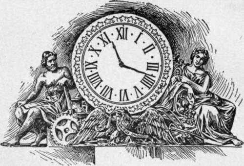

The Congressional Library
Description
This section is from the book "The National Capitol. Its Architecture Art And History", by George C. Hazelton, Jr. Also available from Amazon: The National Capitol Its Architecture Art and History.
The Congressional Library
The rooms which, until July 31, 1897, were occupied by the Congressional Library are upon the main floor, on the west front of the central building. The four columns to the right and left of the entrance door are worthy of passing notice, because of their Americanized capitals. The principal hall, running due north and south, is 91 feet 6 inches in length by 34 feet in width. At each end runs, at right angles, a wing 90 feet 6 inches in length by 29 feet 6 inches in width. All three have the same height, 38 feet.
The walls, alcoves, stairways, aisles and balconies of these rooms were formerly almost a solid mass of books, manuscripts, newspapers, periodicals and prints. Many of these were secured to the Library by exchange, gift and purchase under a small annual appropriation, but more through the provision of the copyri'ght law which compels as a condition of its fulfillment the depositing of two copies of each copyrighted work in the Library of Congress. Under this alone, 55,906 publications of various kinds were added during the year 1896.
This wonderful collection of books, now in the new Library building, took its rise in a small appropriation of $5,000, made April 24, 1800, for fitting up a room with books for the use of Congress. The joint committee appointed to make the purchase selected for the Library room the chamber in the.old north wing which had been occupied by the Representatives during the last session of the Sixth Congress. Inspired with unusual governmental economy, they recommended that the Secretary of the Senate be directed to sell the trunks in which the books had been imported. John Beckley of Virginia was the first Librarian. He was appointed by President Jefferson January 26, 1802, at a salary " not to exceed $2 per diem for every day of necessary attendance." In the following April, the first catalogue of the Library was issued. It credits the collection in an old-fashioned way with 7 duodecimos, 581 octavos, 164 quartos, 212 folios and 9 maps.
In 1814, the Library, which had then considerably grown in proportions, was destroyed by the burning of the Capitol by the British; an ill return for the purchase in Ixmdon of a majority of the volumes. The soldiers gleefully used the books as fuel with which to ignite the building. On the 10th of the following October, the loss of the Library being sorely felt, Mr. Goldsborough, chairman of the Joint Library Committee of Congress, brought to the attention of the Senate a letter from ex-President Jefferson, written at Monticello, September 21, 1814, in which he said:
" I learn from the newspapers that the vandalism of our enemy has triumphed at Washington, over science as well as the arts, by the destruction of the public library, with the noble editice in which it was deposited. ... I presume it will be among the early objects of Congress to re-commence their collection. This will be difficult while the war continues, and intercourse with Europe is attended with so much risk. You know my collection, its condition and extent. I have been fifty years making it, and have spared no pains, opportunity or expense, to make it what it now is. While residing in Paris, I devoted every afternoon I was disengaged, for a Summer or two, in examining all the principal bookstores, turning over every book with my own hands, and putting by everything which related to America, and, indeed, whatever was rare and valuable in every science ; besides this, I had standing orders, during the whole time I was in Europe, in its principal book marts, principally Amsterdam, Frankfort, Madrid, and London, for such works relating to America as could not be found in Paris. So that in that department, particularly, such a collection was made as probably can never again be effected ; because it is hardly probable that the same opportunities, the same time, industry, perseverance, and expense, with some knowledge of the bibliography of the subject would again happen to be in concurrence. During the same period, and after my return to America, I was led to procure also whatever related to the duties of those in the highest concerns of the nation ; so that the collection, which I suppose is of between nine and ten thousand volumes, while it includes what is chiefly valuable in science and literature generally, extends more particularly to whatever belongs to the American statesmen ; in the diplomatic and parliamentary branches, it is particularly full. It is long since I have been sensible it ought not to continue private property, and had provided that, at my death, Congress should have the refusal of it, at their own price ; but the loss they have now incurred makes the present the proper moment for their accommodation, without regard to the small remnant of time and the barren use of my enjoying it. I ask of your friendship, therefore, to make for me the tender of it to the Library Committee of Congress, not knowing myself of whom the Committee consists. ... I should be willing, indeed, to retain a few of the books to amuse the time I have yet to pass, which might'be valued with the rest, but not included in the sum of valuation until they should be restored at my death, which I would cheerfully provide for, so that the whole library, as it stands in the catalogue, should be theirs, without any garbling".
The Senate passed a resolution authorizing the Library Committee to contract for this purchase; but when the resolution reached the House, it occasioned considerable debate. The objections raised were, in general, the extent of the library, its cost and the nature of many of Jefferson's selections. The narrowness of some members led them to criticise the purchase on the ground that the library contained a few books of a skeptical character, notably the works of Voltaire. The bias of one Representative, whose high sense of morality evidently was willing to sacrifice the everlasting blessedness of the "sage of Monticello " for the good of Congressmen in general, led him to " move to re-commit the bill to a select committee, with instructions to report a new section authorizing the Library Committee, as soon as said library shall be received at Washington, to select therefrom all books of an atheistical, irreligious, and immoral tendency, if any such there be, and send the same back to Mr. Jefferson without any expense to him " ; but this motion the gentleman afterwards thought proper to withdraw. On January 26, 1815, the final question was decided in the House in the affirmative by a vote of 81 to 71. Webster, for some reason, spoke and voted against it; Calhoun voted for it. The Jefferson collection, numbering about 6,700 volumes, was accordingly purchased. It cost $23,950, and forms the nucleus of the present Library. The old room had not yet been restored, however, after the fire ; and it was four years before the Joint Library Committee was authorized to fit up and furnish suitable accommodations, again in the north wing, and to move the collection into the Capitol.
Continue to: